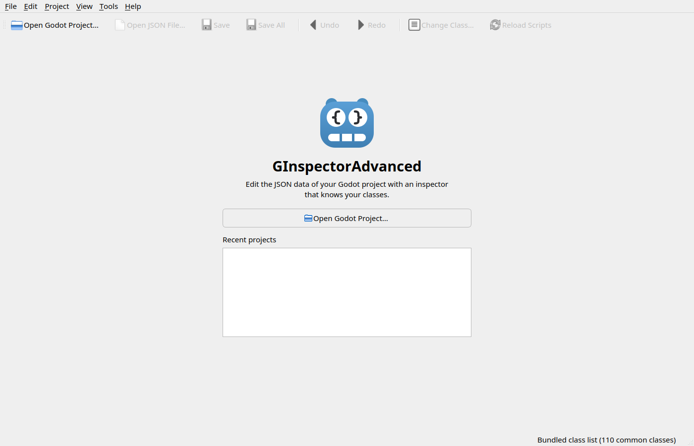
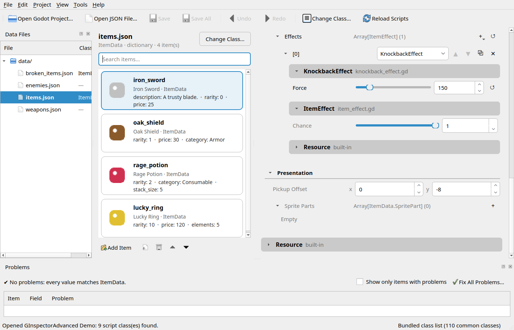

Godot's inspector,
for your JSON files
GInspectorAdvanced is a visual editor for your game's JSON data: items, enemies, dialogues, levels… Link each file to the class that describes it and edit it with an inspector that respects types, ranges and enums. The JSON always matches the class that will load it.

Your JSON data, with the comfort of an inspector
Many games keep their data in JSON because it is easy to read and to version. But editing it by hand is slow, and it is easy to misspell a field, go out of range or use an enum value that does not exist. GInspectorAdvanced reads your scripts and gives you a form made for them.
Understands your classes
It reads the project's .gd and .cs files: @export variables, types, enums,
inheritance, inner classes and annotations such as @export_range or @export_file.
Invalid data can't get in
Every editor applies the class' restrictions, so the UI cannot produce a value your game would reject. Whatever was already wrong is shown in red and fixed with one click.
Respects your file
Saving keeps your key order, your indentation (tabs or spaces), 2 vs 2.0 and objects
written on one line. Your Git diffs stay clean.
class_name ItemData extends Resource enum Rarity { COMMON, UNCOMMON, RARE, LEGENDARY = 10 } @export var display_name: String = "Unnamed" @export_file("*.png", "*.svg") var icon: String @export var rarity: Rarity = Rarity.COMMON @export_range(0, 999, 1, "or_greater") var price := 15 @export_range(0.0, 1.0, 0.05) var drop_chance := 0.25 @export var tint := Color(1, 1, 1) @export var stats: Stats @export var effects: Array[ItemEffect] = []
{
"rage_potion": {
"display_name": "Rage Potion",
"icon": "res://assets/items/potion.png",
"rarity": 2, // combo: RARE
"price": 15, // 0 – 999+
"drop_chance": 0.25, // slider 0 – 1
"tint": "#ff4040", // color picker
"stats": { "damage": 4 },
"effects": [
{ "type": "alter_stat", … }
]
}
}
From your project to editable data in four steps
Nothing to install in your Godot project and no code to change. You just open the folder.
Open your Godot project
Use File ▸ Open Godot Project… and choose the folder that contains project.godot.
Every .gd and .cs script is scanned for classes.
The Data Files panel lists every .json of the project with the class it is linked to.
Recent projects are listed on the start page.

Link the JSON to its class (once)
When you open a file that is not linked yet, the class picker opens. You can pick:
- Project classes: GDScript (with or without
class_name), inner classes and C#. - Godot built-in classes:
Resource,Node2D… - Any script file, even outside the project.
- Edit as Plain JSON, for files that are not made of class objects.
The right side previews the allowed fields. The layout (dictionary, array or single object) is detected
for you. The link is saved in ginspector.json.

Edit with an inspector made for your class
Each item of the file is a card with a thumbnail, a title and a summary. Click it to open it in the inspector, laid out like Godot's:
- One section per class of the inheritance chain, with
@export_groupand subgroups. - Composition: a field typed
Statsopens a nested section. - Polymorphism: when a field is a base class, you pick the subclass from a combo box.
- Typed arrays and dictionaries with add, duplicate, reorder and remove.
- Grey fields are not stored in the JSON and use the class default.

Find and fix problems
The Problems panel lists every unknown field, wrong type, value out of range or invalid option. Double-click one to jump to the field; Fix All Problems… repairs the whole file in one undoable step.
When you change your scripts in Godot and switch back, they are reloaded automatically, and fields that no longer exist show up in red so you can delete them.

Everything you need to keep your data in shape
GDScript & C#
@export and [Export], class_name, inner classes (Outer.Inner), scripts referenced by path and Godot built-in classes.
Real restrictions
Ranges, or_greater, suffixes, enums, flags, file filters, multiline text, placeholders, colors without alpha…
Cards with thumbnails
Image taken from any res:// path in the item, a badge with the number of problems, search and filter.
Inheritance & polymorphism
Pick the subclass from a combo box; it is stored as "type": "alter_stat". Key and values are configurable.
Full undo / redo
Ctrl+Z / Ctrl+Y. Consecutive edits of one field merge into a single step.
Safe saving
Keeps format, order and indentation, and writes a .bak copy before each save (can be turned off).
Outside changes
Edited scripts are reloaded when you switch back to the window. JSON changed on disk is reloaded, asking first if you have unsaved edits.
Wrong class detection
If no item of the file matches the chosen class, you are asked whether you picked the wrong one.
Plain JSON mode
For settings, translations or lists: edit any value with its JSON type, with no class and no checks.
Made for teams
ginspector.json records which JSON goes with which class. Commit it and your whole team shares the links.
Your Godot's exact API
Optional: point to your Godot executable to read every built-in class of your version (--dump-extension-api).
Light or dark
Follows your system palette and works the same on Windows and Linux.
Every type gets the right control
What you declare in the script decides which control appears and what is validated.
| In the script | In the inspector | Validated |
|---|---|---|
bool | Check box | must be true/false |
int, float | Spin box | a number (an integer for int) |
@export_range(0, 100, 5) | Slider + spin box, limited to the range | out of range |
enum Rarity {…}, @export_enum("A", "B") | Combo box with names | value not in the enum |
@export_flags("Fire", "Water") | Check boxes | bits that do not exist |
@export_file("*.png"), @export_dir | Path + browse (inside the project) | extension; missing files are warned |
Vector2/3/4, Rect2 | x / y / z / w fields | [x, y], {"x":…} or "(x, y)" |
Color | Color picker + hex | "#rrggbb(aa)", [r,g,b] or {"r":…} |
Texture2D, AudioStream, PackedScene… | res:// path with preview | must be a path |
Your class (var stats: Stats) | Nested section | each nested field |
Array[T], PackedXArray, Dictionary[K, V] | List / key-value editor | every element |
Up and running in a minute
Download the latest version for your system. No need to install Qt or anything else. Every version is on the Releases page.
Windows
Windows 10 / 11 · 64-bit
- Download
GInspectorAdvanced-windows-x64.zip. - Extract it to a folder, for example
C:\Tools\GInspectorAdvanced. - Run
GInspectorAdvanced.exe. Create a desktop shortcut if you like.
The executable is not signed. If SmartScreen shows a warning, click More info ▸ Run anyway.
Download .zipLinux
AppImage · x86_64 · any distribution
- Download
GInspectorAdvanced-linux-x86_64.AppImage. - Make it executable and run it:
chmod +x GInspectorAdvanced-linux-x86_64.AppImage
./GInspectorAdvanced-linux-x86_64.AppImage # or: ./… path/to/my_game
If your distribution does not ship FUSE 2, install libfuse2 or run it with
--appimage-extract-and-run.
Build from source
You need CMake ≥ 3.19, a C++17 compiler and Qt 6.2+ with the Widgets and Svg modules.
Linux
# Debian/Ubuntu: sudo apt install build-essential cmake qt6-base-dev libqt6svg6-dev # Fedora: sudo dnf install gcc-c++ cmake qt6-qtbase-devel qt6-qtsvg-devel # Arch: sudo pacman -S base-devel cmake qt6-base qt6-svg git clone https://github.com/Grojman/GInspectorAdvanced.git cd GInspectorAdvanced cmake -S . -B build -DCMAKE_BUILD_TYPE=Release cmake --build build -j ./build/GInspectorAdvanced # optional: menu entry and icon sudo cmake --install build
Windows
Install Qt 6 with the online installer (MSVC 2022 64-bit or MinGW kit, with Qt SVG) and, from a Developer Command Prompt:
cmake -S . -B build -DCMAKE_PREFIX_PATH=C:\Qt\6.8.0\msvc2022_64 cmake --build build --config Release C:\Qt\6.8.0\msvc2022_64\bin\windeployqt.exe build\Release\GInspectorAdvanced.exe
You can also open the folder in Qt Creator and press Run.
Good to know
Do I need Godot running, or a plugin?
No. Scripts are read as text, without running Godot. The app only writes your JSON files and ginspector.json.
What is ginspector.json?
A file at the project root that records which JSON is linked to which class, plus a few settings. Godot ignores it unless your code loads it.
Which variables can I edit?
By default only exported ones (@export / [Export]), like Godot saves them. Tools ▸ Settings can include public or all variables.
What if my loader renames keys?
JSON keys must be the variable names. If your code maps "sprite" → icon, those keys are reported as unknown fields.
Are comments or trailing commas accepted?
No, just like Godot's parser. The JSON has to be standard.
Where do I report a bug?
Open an issue on GitHub, ideally with the script and a small JSON that shows the problem.
Can I try it without my own project?
Yes: the repository includes examples/demo_project with items, enemies, polymorphic effects and a file that is broken on purpose.
Stop editing JSON by hand
Download GInspectorAdvanced, open your Godot project and edit your data knowing it always matches your classes.